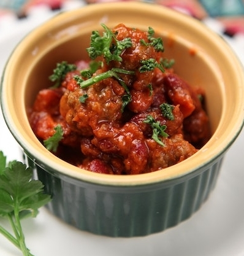

Our Signature Chilimac recipe is typically made in about 8
hours and requires a Crockpot. Alternatives can be found in grey sections. Sign in to save or see other recipes!
First! The Chili ingredients...
1 lbs. Ground Turkey
1x can of Pinto Beans
1x can of Dark Kidney Beans
1x Can of Light Kidney Beans
1x can of Black Beans
2x Diced Bell peppers
1x Diced Onion
1x can of Corn Kernels
1x can of Diced Tomatoes
1x can of Tomato Paste
1x packet of preferred Taco or Chili seasoning
2x tbsp of salt
2x tbsp of Pepper
2x tbsp of Olive Oil
Making the Chili
Place Ground Turkey, Diced Bell Peppers, Diced Onions, Salt, Pepper, and Olive oil into a pan
Cook on Medium heat until turkey appears mostly done
Grab your crockpot and add all ingredients into it, including everything canned and what you just cooked
Stir and break up the meat if necessary in the crockpot until everything is mixed
Place Crockpot on "LOW" for 8 Hours

Alternatively use a Can of store bought chili!
Sauce ingredients
1x garlic clove
1x can of tomato paste
1x tablespoon extra virgin olive oil
1/2x teaspoon dried oregano
1x tbsp sugar
1x tbsp of salt
2x tbsp of basil
1/2x cup of finely diced white onion
Making the sauce
dice up garlic, onions, basil, and oregano
put tomato paste into a pan and begin warming at low heat
add up to 1x cup of water to paste for consistency
wait for paste mixturer to be warm but not boiling
Mix in 1x tbsp of olive oil, 1x tbspsugar, 1x tbsp of salt
Add your diced garlic, onions, basil, and oregano
Stir for 10min
Want it easy? Instead use store
bought Macaroni and Cheese!
Mac n Cheese
1x Ball of mozzarella (or pizza mix of cheese)
1x Jimmy Dean Maple Sauasge roll
16oz of Tomato sauce above (alternative Classico Hearty Tomato Basil)
4x cups of Fresh spinach leaves or zucchini (diced if preferred)
Assembling the Pizza
After letting dough rise for 3 hours, begin rolling it out into a square
Place onto a Pizza Stone or Cookie Sheet with a olive oil rub to avoid sticking
Use 1/2 of pizza dough to make desired shape
Add sauce, should be thick enough to barely see the dough through it
Use 1/2 ball of mozzarella after grading or dicing